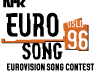

[Den norske finalen]
[Den internasjonale finalen]
[Tilbake til hovedsiden]
Tidligere vinnere av Euro Song
År Land Melodi Artist 1956: Sveits Refrain Lys Assia 1957: Nederland Net als toes, Carry Brokken 1958: Frankrike Dors mon amour, Andre' Claveau 1959: Nederland Een Beetje, Teddy Scholten 1960: Frankrike Tom Philibi, Jacqueline Boyer 1961: Luxembourg Nous les amoureux, JeanClaude Pascal 1962: Frankrike Un premier amour, Isabelle Aubret 1963: Danmark Dansevise, Grethe og J›rgen Ingmann 1964: Italia Non ho l'eta, Gigliola Cinquetti 1965: Luxembourg Poupe'e de cire, poupe'e de son, France Galle 1966: Østerrike Merci che'rie, Udo Ju"rgens 1967: England Puppet on a string, Sandie Shaw 1968: Spania Lalala, Massiel 1969: Spania Vivo cantando, Salome England Boom bangabang, Lulu Nederland De Troubadour, Lennie Kuhr Frankrike Un jour un enfant, Frida Boccaro 1970: Irland All kinds of everything, Derry Lindsay og Jackie Smith 1971: Monaco Un banc, un arbre, une rue, Severine 1972: Luxembourg Apre's toi, Vicky Leandros 1973: Luxembourg Tu te reconnaitras, Anne Marie David 1974: Sverige Waterloo, ABBA 1975: Nederland Ding dinge dong, Teach In 1976: Storbritannia Save your kisses for me, Brotherhood of Man 1977: Frankrike L'oiseau et l'enfant, Marie Myriam 1978: Israel Ahbahneebee, Izhar Cohen og Alpha Beta 1979: Israel Hallelujah, Gali Atari & Milk and Honey 1980: Irland What's another year, Johnny Logan 1981: Storbritannia Making your mind up, Bucks Fizz 1982: VestTyskland Ein Bisschen Frieden, Nicole Adieu, 1983: Luxembourg Si la vie est cadeau, Corinne Hermes 1984: Sverige Diggyloodiggyley, Herrey's 1985: Norge La det swinge, Bobbysocks 1986: Belgia J'aime la vie, Sandra Kim 1987: Irland Hold me now, Johnny Logan 1988: Sveits Ne partez pas sans moi, Ce'line Dion 1989: Jugoslavia Rock me, Riva 1990: Italia Insieme: 1992, Toto Cotugno 1991: Sverige Fångad av en stormvind, Carola 1992: Eire Why Me? Linda Martin 1993: Eire In Your Eyes Niamh Kavanagh 1994: Eire Rock'n Roll Kid Paul Harrington og Charlie McGettigan. 1995: Norge Nocturne Secret Garden
[Innhold] [Info] [Aftenposten hjemmeside] [Kultur/Underholdning hovedside]